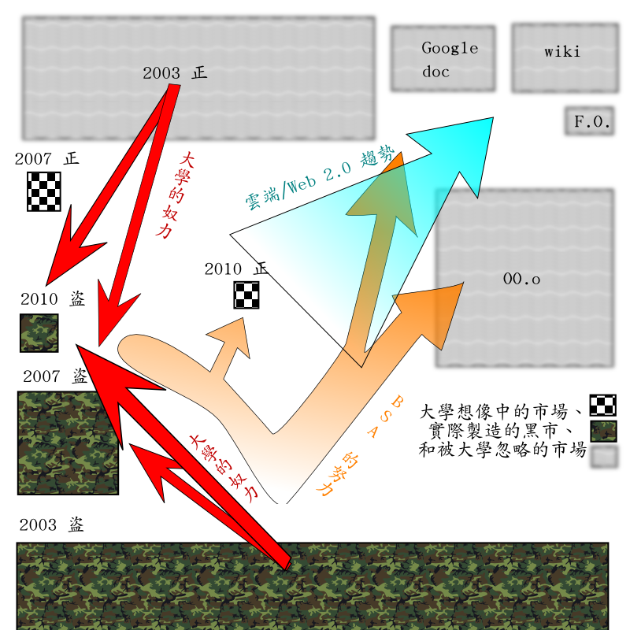
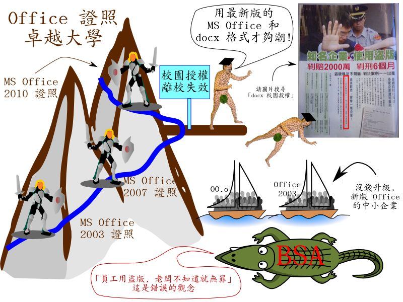

以企業為壑、以學生為人肉地雷、替 BSA 製造盜版原料的 MS Office 證照卓越大學

許多大學（尤其是科技大學）認為「鼓勵學生使用最新版的 MS Office，有助於提升學生的競爭力」。然而從 BSA 抓盜版的文宣卻可以看出相反的結論：大學在校期間習慣（非法）使用新版 MS Office 的學生，畢業後將成為企業盜版的地雷，對企業危害甚大。最可悲的是，這些「MS Office 證照卓越大學」的畢業生，不似某些國立普通大學畢業生享有「畢業永久版」的權利，因此在 BSA 進入企業抓盜版時，極有可能背負「陷害公司的害群之馬」的沉重罪名，在遭起訴的公司同仁當中，成為眾矢之的、遷怒的對象。面對學生遭受如此的委曲，MS Office 證照卓越大學的電算中心與資訊教授，能否站出來發出專業的建議？這不僅僅是涉及學術尊嚴與教育良知，甚至已經在挑戰著資訊教授最基本的職業道德，更動搖著 MS Office 證照卓越大學的招生信譽。

▲ 圖一
首先看看現今的 Office 市場及市場變化的驅力。
絕大多數企業與組織，其實還在使用 MS Office 2003 或更舊的版本。另一方面，OO.o 不僅在好幾個歐洲國家市佔率達到兩成以上，在臺灣，也有聯經數位、宜蘭縣政府、慈濟、中鴻（中鋼的子公司）、台糖等大企業和組織導入。小公司惰性小，導入更加容易。請搜尋「導入 OOo」，可以看到一些報導。相對地，搜尋「導入 Office 2007」，可以看到除了許多不太相關的簡體中文教學文之外，還可以看到「科技大學〔對 Office 2007〕的奉獻」（kuso 過的嘲諷歌詞）、「強制 Office 2007 的使用者，預設以 Office 2003 格式儲存」、「輿論，也是市場機制的一部分」（又一篇挑戰 Office 2007 的文章）、... 。就是看不出哪一家企業或組織導入 Office 2007。當然你也可以只搜尋「導入 Office」，會看到大眾電腦一個案例。「大眾電腦一直是微軟長期合作的 OEM 好夥伴」，至於那些並非微軟長期合作的好夥伴，恐怕難有如此高的動機。簡單講：Office 2007 推出已邁入第四年，行將被微軟自己的新產品淘汰，卻還是甚少企業大舉導入。各種跡象顯示：使用 OO.o 的組織企業應該遠高於使用正版 Office 2007 的企業。
另一方面，「雲端運算」裡面，最大塊的就是雲端 Office 的市場。但是在 MS Office 證照卓越的大學裡面，高談闊論開發新雲端技術的聲音多；正視企業導入 google doc 與 wiki 趨勢，討論這些雲端版 Office 替代方案新興人力市場的聲音少（或根本沒有）。這又是一大塊被 MS Office 證照卓越大學所忽略的 Office 人力需求市場。
事實上，一年一度的 BSA 抓盜版行動，一方面促使某些企業購買新版的 MS Office 另一方面也同時促成某些企業導入 OO.o 或改用免費的雲端方案。請用 BSA 前年的廣告關鍵詞「用正版」和去年的廣告關鍵詞「換正版」搜尋一下就知道。從這個角度來看，BSA 對社會的貢獻，尚且遠遠高於 MS Office 證照卓越的大學。
MS Office 證照卓越的大學不僅沒有服務到最大塊的既有市場（MS Office 2003）以及新興的長尾市場（OO.o 與雲端版的 Office 免費替代方案），他們貢獻最大的面向，甚至並不是教授們心中想像的「最新版 Office 市場」。MS Office 證照卓越的大學的實質成就，是擴大盜版 Office 的市場。他們是 BSA 上游的原料供應廠，負責提供習於使用最新版盜版 Office 的學生，作為埋在企業當中，點燃下一波抓盜版行動的人肉地雷，拿自己的學生與學生的僱主作為祭品，替微軟衝高業績。一方面，這些大學用證照的要求與電腦教室的設定，鼓勵學生寄送 docx 檔，迫使不熟電腦的校內外收件人盲目升級，大多數時候當然是以盜版的方式升級。另一方面，學生在宿舍與家中的電腦採用盜版的新版 Office，已經成為一種習慣。以朝陽科技大學為例，學校提供 kms 認證機制，如果經過複雜的手續，至少在校期間，宿舍與家中的電腦理論上也可以使用合法的 Office。（請對照安裝 OO.o 的動作有多簡單：下載，執行安裝程式。或者不要安裝，直接用聯經數位所整理的 upp--隨身碟版 Windows 自由軟體。）然而根據側面了解，不僅絕大多數學生不知道這個程序存在，甚至連行政人員都誤以為校園授權並不涵蓋學生家中電腦，更遑論有誰真的走完那個複雜的認證程序。但是學生在家中有沒有在使用 MS Office 呢？他們使用的是正版 MS Office 嗎？天天宣導反盜版，甚至為了反盜版而用錯誤的文宣誤導學生將所有 p2p 與盜版亂畫等號的電算中心，知道不知道這些事實呢？當然，電算中心主任與資訊教授們可能回應：「安啦！BSA 不會到學生家裡抓盜版。」也可能回應：「學生在家中的行為，校方無法約束。」事實上這樣的回答，恰好就承認了學生盜版文化與習慣的存在，甚至更肯定其普遍性。絕大多數的學生在家使用盜版，這已是一種根深蒂固的習慣，也是 MS Office 證照卓越大學默認接受、從來不敢面對的一種校園文化。

▲ 圖二
「家中使用盜版最新 MS Office」的文化與習慣，在校園授權合約盔甲的保護下，似乎不是問題。但是校園授權合約的保護盔甲，在畢業時會自動消失繳回；而堅持使用最新 MS Office 的盜版文化與習慣，卻會被學生帶入社會。學生進入公司之後，一旦盜版 Office 被抓到，誰要上法庭坐監牢呢？BSA 說得很清楚：「『員工用盜版，老闆不知道就無罪』這是錯誤的觀念。」（完整報導請圖片搜尋「docx 校園合約」）、「我用最潮的新版，老闆如果不配合我升級購買足夠的版權，那麼將來我被抓，也有老闆和同事一起陪葬。安啦！」天塌下來，有老闆頂著，畢業生更加安心地用盜版，而企業界也就埋下更多的地雷等著 BSA 去引爆了。微軟當然不會對在學的學生下手。微軟樂見你盜版。Bill Gates 親口用「上癮」描述使用者對於微軟軟體的依賴：
「As long as they are going to steal it, we want them to steal ours. They'll get sort of addicted, and then we'll somehow figure out how to collect sometime in the next decade.」
「既然他們都會盜版，那就不如讓他們盜我們的軟體吧。先讓他們上癮，而我們再來研究接下來十年如何向他們收錢。」
等到 BSA 抓盜版的時候，MS Office 證照卓越大學的畢業生，還會發現一件更不堪的事：並不是所有的同事都會加入陪葬的行列。請看以下一些大學的授權連結：
1. 畢業後仍可繼續合法使用畢業當年版本：成功大學、臺南大學、中山醫學大學、交通大學、世新大學、暨南大學、政治大學、臺北科技大學、中華大學、陽明大學、臺灣大學、中興大學、嘉義大學、元智大學。
2. 僅限在校生；如果會操作 KMS 認證，家中電腦亦可使用正版：朝陽科技大學。
3. 尚未開放校外認證（因此家中 office 為盜版）：龍華科技大學。
某些國立的普通大學，其校園授權保護傘擴及畢業生；但多數 MS Office 證照卓越大學卻反而並未享有這樣的優惠。為什麼？因為這些大學對於微軟絕對的品牌忠誠，換得的是全然的奴役對待。當一所大學的電算中心主任不敢回答他服務的對象是誰，當一所大學不惜任何代價堅持要無怨無悔地替微軟推廣產品，那麼微軟又何必對這所大學提出任何的優惠條件？如果我是微軟，當然也會吃定這樣的大學。反正我給的條件再怎麼嚴竣苛刻，他還是會乖乖地簽約。這時，MS Office 證照卓越大學的畢業生很可能會發現自己還要孤獨地背負著害群之馬的罪名。
當代的大學既不能文，又不能武，甚至連資訊教授都無法明確回答他們替誰服務。MS Office 證照卓越的大學，一時之間恐怕很難有任何改變。面對微軟、BSA、MS Office 證照卓越大學所形成的強大共犯結構，企業主與大學（畢業）生該如何維護自身的權益呢？
建議企業主不僅要一邊試著用 wiki 作為部分取代 Office 的免費雲端方案，一邊追隨世界與臺灣潮流導入 OO.o，採取各種邁向自由穩健走的措施，更要注意在僱用新人時，請他簽下切結書：「保證絕不在公司電腦安裝盜版軟體。」老闆如果可以委曲自己接受 OO.o 排版的短暫小瑕疵，便有機會永遠擺脫 MS Office 抓盜版的恐怖陰影。
至於大學畢業的新鮮人，固然不需要像我一樣拒絕使用 MS Office，但更不應該像 MS Office 證照卓越的大學一樣完全漠視 Office 其他免費替代方案的人力市場。你可能還是必須去考「沒有用的新版 Office 證照」（不然學校不讓你畢業？）；也要學會用那些最能替企業省錢的 OO.o 與 wiki（或 google doc）；如果貴校不是微軟眼中的次等或三等公民的話，畢業時還要記得向學校申請終身授權（備而不用，別因為備有毒品就戒不了毒癮）；找工作時請把這篇文章印給老闆看，告訴他：「我什麼 Office 都會、也懂得如何將 Office 存檔格式設定為不是 docx。我只用合法的 Office；我保證絕不在公司電腦安裝盜版軟體，也絕不會陷害老闆被 BSA 抓。」在這個奇特的年代，只要你用具體行動（而不只是口號）表達領錢做事的真誠，就已經足以打敗很多競爭對手。
如果貴校將保護傘延伸至你畢業，請發揮你的愛心，體貼那些微軟眼中次等與三等公民的學校畢業生，支持沒有保護傘的他們改用 OO.o。因為如果現在你挾畢業永久版保護傘之勢，強迫企業主與這些弱勢同學盲目升級，那麼將來你的學弟妹也會挾最新版的保護傘之勢（你所沒有的保護傘）強迫企業主與你升級。至於那些來自不提供保護傘大學的畢業生，請思考你的處境。115 萬的校園授權合約，用的當然是你所繳的學費。這個帳可以扯平，因為這可以算是用來購買你在校園期間毒癮許可授權的保護費。但是請自問：(1)「證照為誰考？」、(2)「我為了替微軟推廣新版 Office，和我們那位想改用 OO.o 省錢的老闆吵了幾次？」、(3)「BSA 抓盜版時，為什麼我要成為人肉地雷／公司的害群之馬？」、(4)「別人沒有 MS Office 證照，不曾替微軟推廣新版 Office，為什麼他卻反而可以受到畢業永久版的終身保護？」如果微軟付你錢，因而你必須為它作出這些犧牲，這樣奇特的行為，或許還有討論的空間；如果被百般糟蹋蹂躪，卻還要替微軟推廣最新版的 MS Office 與 docx 專利地雷格式，那只能說個性使然，有些人命中註定就是永遠要被強權糟蹋蹂躪，然後再勇敢挺身，替糟蹋蹂躪他的強權辯護脫罪。
我會在自己任教的系所提出一個「我只用正版，老闆請心安」的提案，希望藉此提升業界對本系同學的信心；不過根據過去我在敝系與敝校努力的經驗看來，很沒有把握；就算系上通過了，要推廣到全校，更是另一個極大的挑戰。如果微軟因為我的這篇文章而將本校升級為一等公民，讓本校的畢業生也享有終身保護，同學們請記得要感謝撰文談論此議題，幫大學爭取談判籌碼的貴哥。在這個奇特的年代，大學校園裡面到底還可以找到多少殘存的獨立思考能力、學術尊嚴、教育良知、甚至是基本的職業道德以及拿替代品討價還價的能力？我越來越沒有把握。最終，還是需要靠企業與大學生用輿論的力量讓有 MS Office 證照卓越的大學知道市場的真實需求，才有機會還給社會一個乾淨、沒有 docx 法律地雷、沒有最新 Office 盜版人肉地雷的安全軟體生活空間。